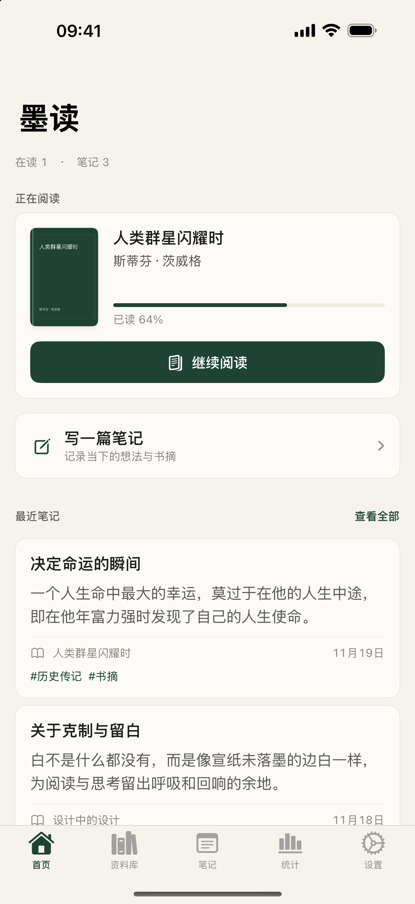

阅读笔记
整理书架、写读书笔记、做成书摘卡片。内容都保存在你自己的手机里。这次把界面整体改了一遍，看起来更干净。
阅读笔记 · 书架 · 书摘卡片

能做什么
笔记可以关联到对应的书。以后打开一本书，就能看到当时写的内容。
可以用标签分类，也可以搜索。需要时再把那句话找回来。
保存到相册，或用系统分享发出去。卡片怎么做，由你自己定。
本地保存
墨读不用注册。阅读内容保存在本机，你可以导出备份，自己保管。
联系
使用问题或功能建议，发到 inkreads@163.com